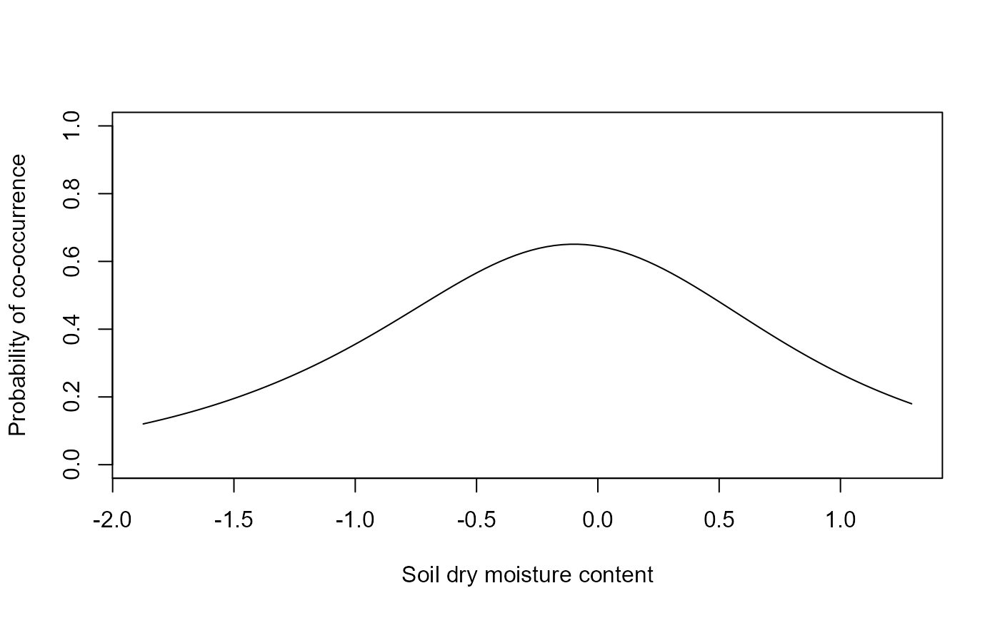

Obtains the probability of co-occurrnece for species from a fitted generalized linear latent variable model object.
# S3 method for class 'gllvm'
predictPairwise(
object,
spp = NULL,
se.fit = FALSE,
alpha = 0.95,
seed = 42,
...
)an object of class 'gllvm'.
a vector of length 2, defaults to NULL. If NULL, returns the probability of co-occurrence for all species in the data.
logical, defaults to FALSE. If set to TRUE, returns a simulated confidence interval of the prediction.
numeric between 0 and 1, defaults to 0.95. Confidence level of the prediction.
numeric, defaults to 42. Seed for the simulation of the confidence interval.
arguments passed to "predict.gllvm".
A matrix of size np(p-1)/2 by 2.
The probability of co-occurrence is simply given by the joint probability of getting two presences for any pair of species. As such,
it is simply calculated as the product of the probability of occurrence for any pair of species, so that this function mostly serves
as convenience wrapper around "predict.gllvm".
# \donttest{
# Load a dataset from the mvabund package
data(spider, package = "mvabund")
y <- as.matrix(spider$abund)
X <- scale(spider$x)
# Fit gllvm model
fit <- gllvm(y = y, X, formula = ~soil.dry, family = poisson())
# fitted values
newX = data.frame(soil.dry = seq(min(X[,"soil.dry"]),
max(X[,"soil.dry"]), length.out=100))
predPair <- predictPairwise(fit, spp = c(1,2), newX = newX, level = 0)
plot(x = newX$soil.dry, y = predPair$prob, type = "l",
xlab = "Soil dry moisture content",
ylab = "Probability of co-occurrence", ylim = c(0,1))

# }